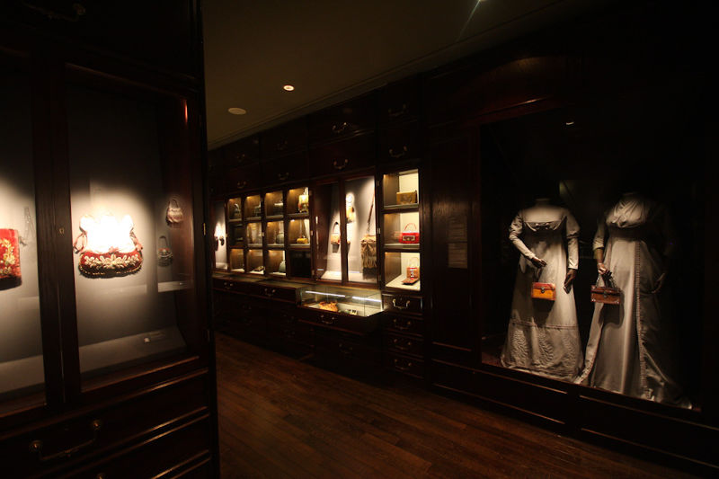
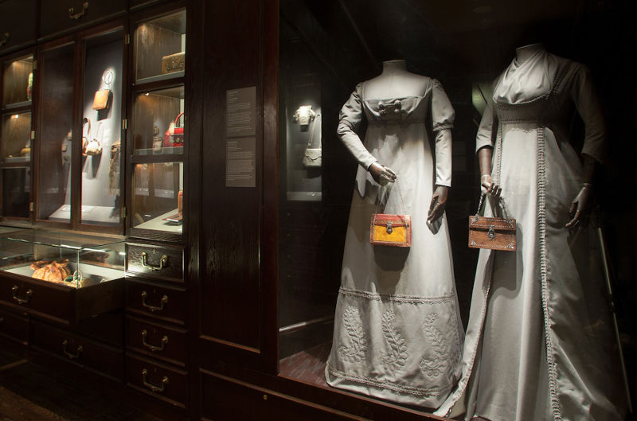

Prototyping initial designs into a working model to accommodate drawer hardware which could cope with the intended usage. The top drawers were to be opened by the public, the others for storage with the option to be used in the future should the exhibition grow. So all the drawers had to be detailed with the future growth in mind. Each unit had a high specification of hardware and lighting some of which had to be hidden from view. The brass escutcheons and locks were all inset creating highly detailed oak cabinets for the historical gallery.

Each unit consisted of three stacking cabinets: lower - being four working drawers with glass lids, middle – displaying the handbags either fully open or compartmentalised, top – two storage cupboards. The finish was oak panels which were all edged with solid timber with beading added and the door units were solid timber with beading routed in.
I brought together a team of four which I led in the fabrication.
